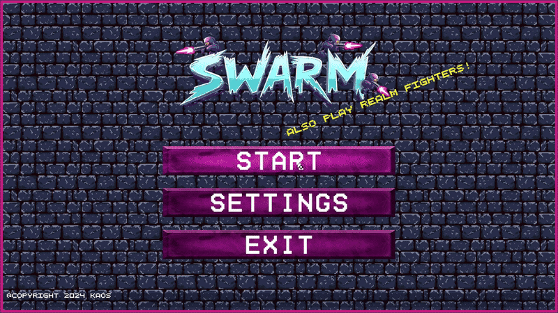
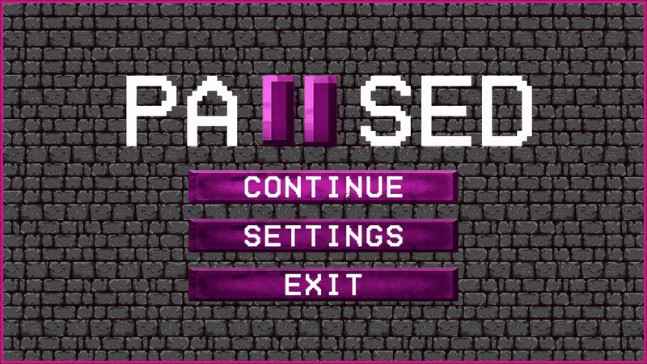
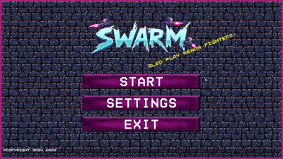
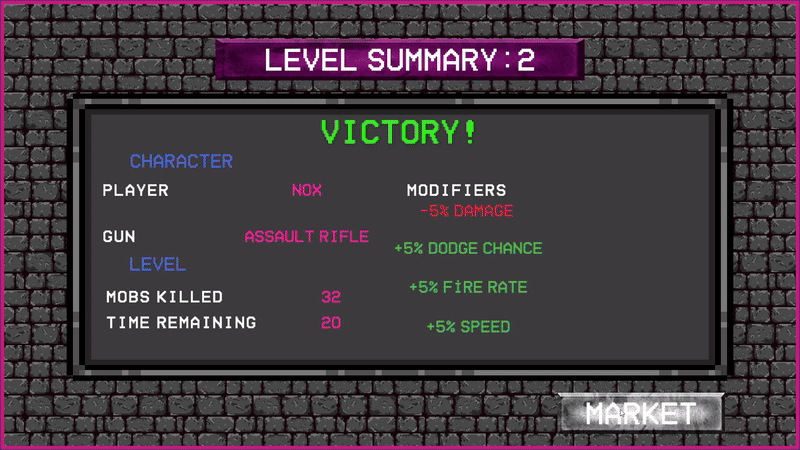

Overview
This project originally started as a university team assignment, but after the course ended I took full ownership and rebuilt the entire game on my own from the ground up.
Using Unity and C#, I added new characters, new maps, redesigned core systems, implemented new gameplay mechanics, and completely overhauled the UI/UX. I refactored the architecture, fixed existing issues, and improved stability, balance, and overall gameplay. I independently handled the full development cycle—from design and coding to testing and polishing.
Key Features
- Centralized Bootstrap scene managing audio, language, and global systems
- Fully functional pause system usable in every scene without breaking gameplay flow
- 20 handcrafted maps designed with progressive difficulty balancing
- New enemy types, improved NPC behaviors, and optimized AI reactions
- Dynamic performance-based reward and economy system
Gallery

Choose your agent!

Dash to escape enemies with Shift!

Face new and tougher enemies at every level!

Take a breather!

Because escaping is never that easy.

Make your own settings

Use the market to gain strength